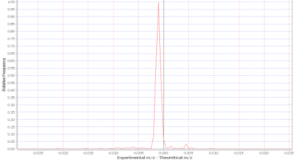

Explanation
A distribution of relative frequency of experimental precursor ion mass (m/z) - theoretical precursor ion mass (m/z). Mass deltas close to zero reflect more accurate identifications and also that the reporting of the amino acid modifications and charges have been done accurately. This plot can highlight systematic bias if not centered on zero. Other distributions can reflect modifications not being reported properly.
In this example we can clearly see that the distribution is centered close to zero with very little spread. Peptide sequences, charges and modifications, have been accurately reported and the instrument calibration was fine.